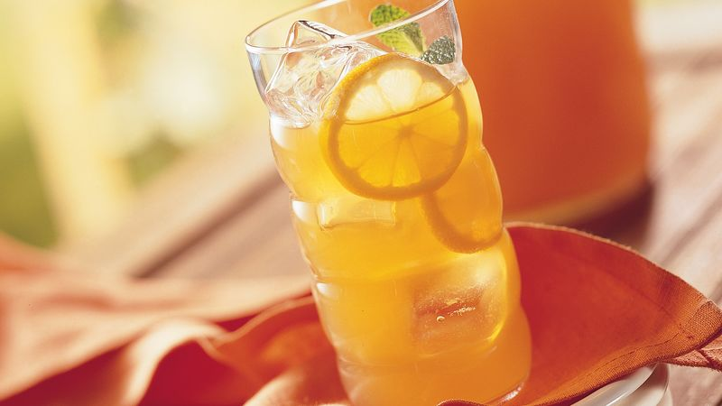
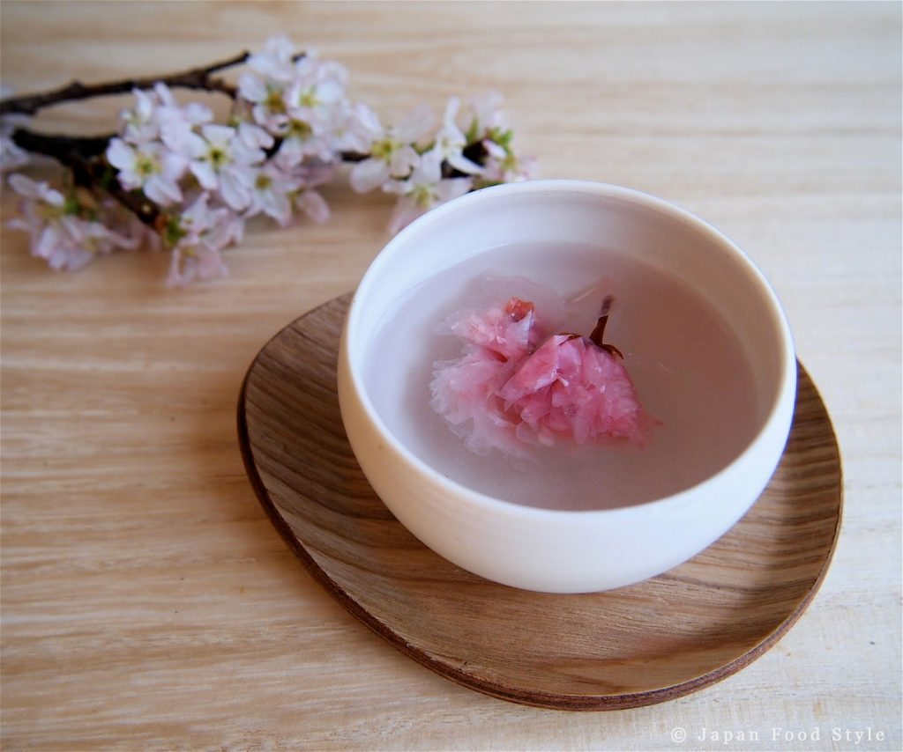
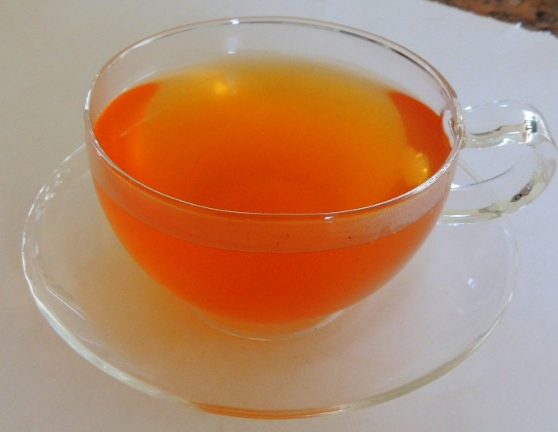

Shop our teas inspired by cartoons and characters.

PEPPA"S PINK TEA PARTY
This tea is a strawberry infusioned tea
with a hint of lemon, and is served with ice.
This is a decaf tea making it perfect for your
little kids.

KRUSTYADE
Krustyade is a lemonade tea that is sour,
but sweet with a hint of pineapple scent.
This is a low on caffeine tea
to help you start up and enjoy your day!

DORA'S PASSION
This is the most "deepest" tea you'll ever
have. It is a pur'eh passion fruit blend, and is
high caffeinated so you could be as
adventurous as Dora.

POWER BLOSSOM TEA
This tea is perfect for a zen day. If you even
need to relax, this is the perfect tea for you.
Just put on some relaxing music, and drink
this tea, and in no time you'll be calm. This
is a herbal tea meaning it's decaf. Named
after Blossom from Powerpuff Girls.

LOONEY CARROTS
Looney Carrots is a family drink.
This sweet carrot tea is a must for
family Looney Tune night. We
offer three levels of caffeine-
decaf,low,and normal. Use this
tea as hot or cold. Overture!